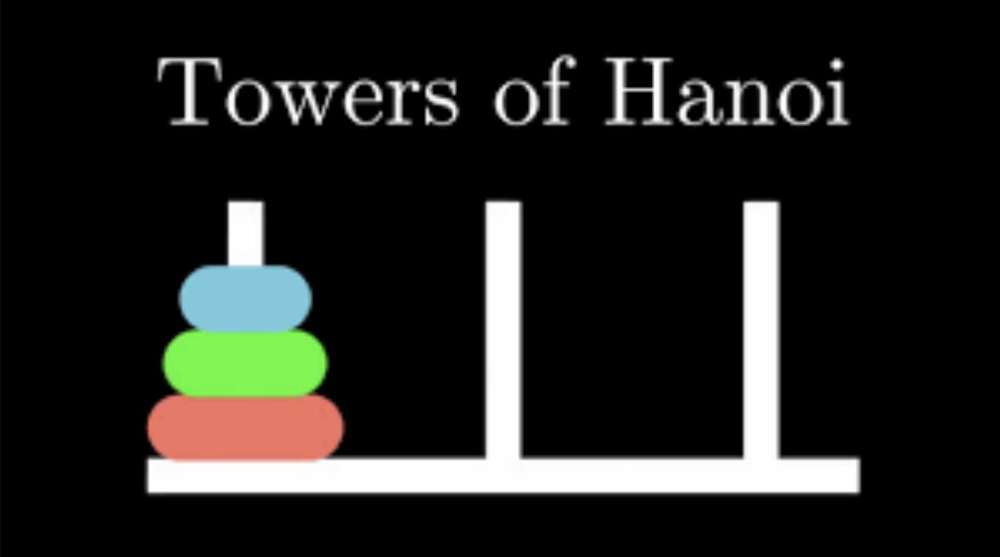

Jelajahi beberapa proyek akademik dan eksplorasi pribadi saya, mulai dari pemrograman berorientasi objek, implementasi algoritma struktur data, hingga perancangan UI/UX dan proposal bisnis.
Sebuah sistem simulasi perangkat rumah pintar yang mencakup fungsionalitas Thermostat, Camera, dan OfflineRelay. Dibangun dengan menerapkan konsep inti Pemrograman Berorientasi Objek.
Lihat di GitHubAplikasi simulasi yang menggunakan struktur data Tree untuk memetakan hubungan antara item mentah hingga menjadi item tingkat akhir di game Mobile Legends secara hierarkis.
Lihat di GitHub
Penyelesaian studi kasus Tower of Hanoi dengan 6 ring berwarna acak menggunakan struktur data Stack untuk memisahkan ring berdasarkan warna ke tiang tertentu.
Lihat di GitHub